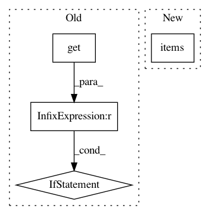

805eab66e46f4dd77f776cf34f70346fd4279d8a,networkml/featurizers/funcs/host.py,HostBase,_tshark_ratio_ports,#HostBase#,147
Before Change
return packet_ratio
for ip_proto_num, proto_df in mac_df.groupby("ip.proto"):
ip_proto = TCP_UDP_PROTOS.get(ip_proto_num)
if ip_proto is None:
continue
src = proto_df["%s.srcport" % ip_proto]
dst = proto_df["%s.dstport" % ip_proto]
for field_name, wk_ports, port_src, port_dst in (
("priv", self.WK_PRIV_TCPUDP_PORTS,
After Change
packet_ratio = 1
return packet_ratio
for ip_proto_num, ip_proto in TCP_UDP_PROTOS.items():
proto_df = mac_df[mac_df["ip.proto"]==ip_proto_num]
lowest_ports = self._lowest_ip_proto_port(proto_df, ip_proto)
src = proto_df["%s.srcport" % ip_proto]
In pattern: SUPERPATTERN
Frequency: 3
Non-data size: 4
Instances
Project Name: CyberReboot/NetworkML
Commit Name: 805eab66e46f4dd77f776cf34f70346fd4279d8a
Time: 2020-04-21
Author: josh@vandervecken.com
File Name: networkml/featurizers/funcs/host.py
Class Name: HostBase
Method Name: _tshark_ratio_ports
Project Name: CyberReboot/NetworkML
Commit Name: 805eab66e46f4dd77f776cf34f70346fd4279d8a
Time: 2020-04-21
Author: josh@vandervecken.com
File Name: networkml/featurizers/funcs/host.py
Class Name: HostBase
Method Name: _tshark_ports
Project Name: pgmpy/pgmpy
Commit Name: 306ac2dce98f1faecba55418dbcd957fadde460e
Time: 2015-11-13
Author: utkarsh.gupta550@gmail.com
File Name: pgmpy/readwrite/BIF.py
Class Name: BIFReader
Method Name: get_model